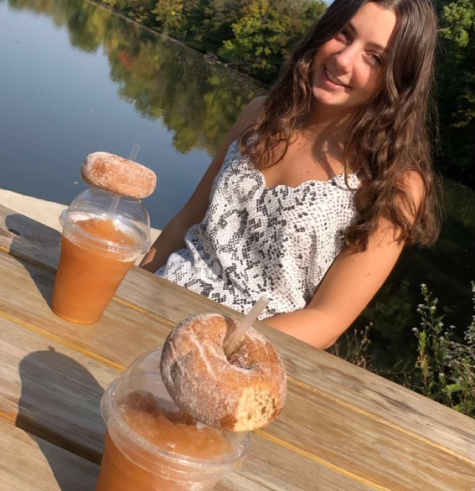

Cider Slushy, Walks & Donuts
Kate Roney's POV

From looking at the title and photo provided, you may think this will be a short, basic story of two friends going to the cider mill but you should never judge a book by its cover. Like any book, to understand the context you need to hear the backstory. It all started the August 30th, 2020, the first week of starting my junior year. When I was preparing for school, I started to feel exetremely dizzy and unaware of my surrondings, after that there was a sharp pain in my head and I blacked out. On my ride to the hosptial, I found out I just had a siezure. After several CT scans and MRI's the doctors told me I had large, benign tumor in my brain that needed to be treated as soon as possible. Although that was scary, this relates to this story because it meant that semester of Junior Year I would be on bed rest. The surgery was two weeks later. During that month I felt so isalated and out of touch with others and myself since I couldn't see anyone due to the risk of getting covid. It scared me even more knowing that this was going to be my life for another month.
Not being able to be with any of my friends for the start of Junior Year made my depression worse. The day when Emma came ove to go to the cider mill with me meant so much. She got covid tested before coming, so she would be able to see me. Even though to her it probable didn't mean much, that small act meant so mcuh to me. It was a reminder that I wasn't alone and still had so many people that cared about me.
We spent a couple hours walking around a small town in our hometime and talked like I was never gone. After walking around town we stopped at a popular cider mill in the area and got cider slushing and donuts. The view was amazing and the food was even better. She is one of my closest friends, and with Emma Toppi, there is never a dull moment when she is around. I don't remember what we talked about but I remember the feeling it gave me. After a month, I finally felt like myself again. This was the first time after my siezure, I knew that everything was going to be okay. In just three hours, Emma Toppi was able to brighten my mood for a couple weeks.
How the Slap Works
The first thing you need to do it create a profile. Once your profile is creates, there will automatically be folders put on your page like: stories, affirmations, random, thought of you. After your page is set up, you can then direct your friends to your page where they may follow you. You can create your own folders, choose to make a specific folder or post private for you and the friend that posted its eyes. There is also an option to anonymous. After playing around with the website you should be able to understand the basics and begin slapping.